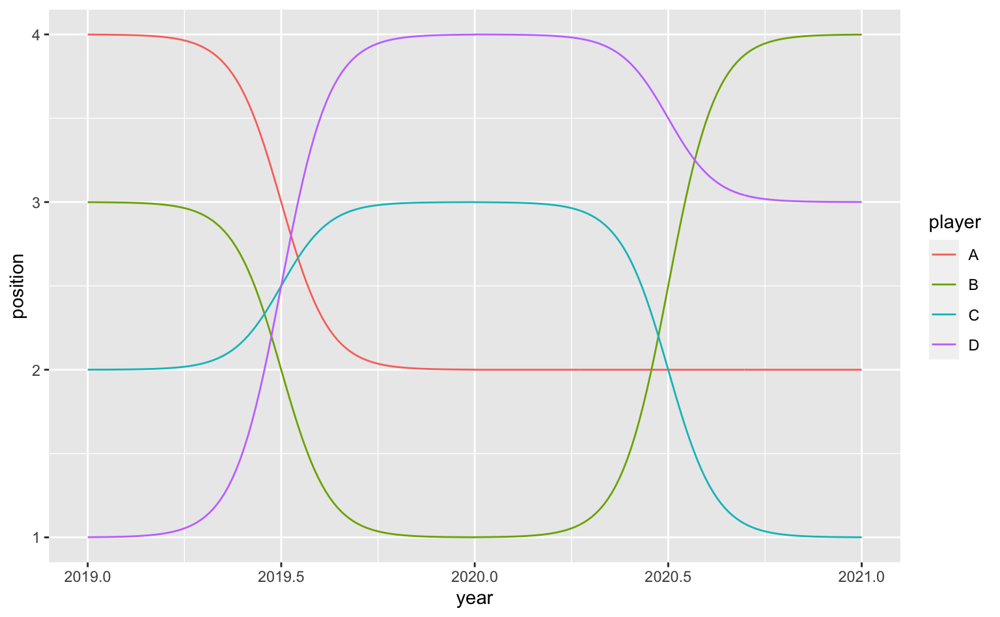
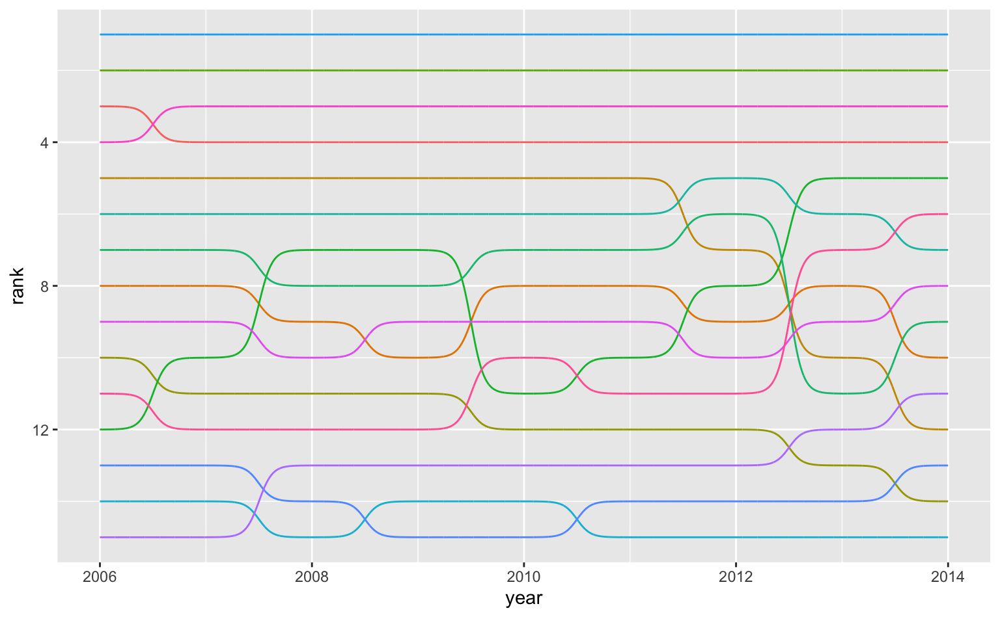
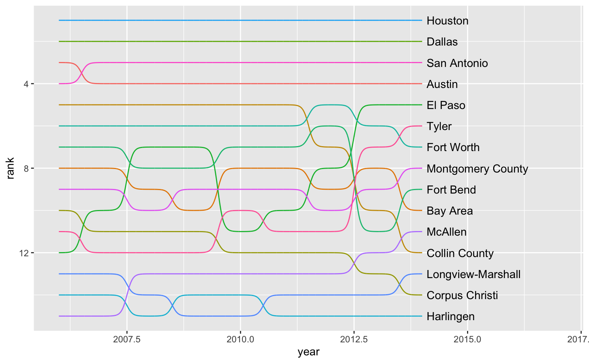
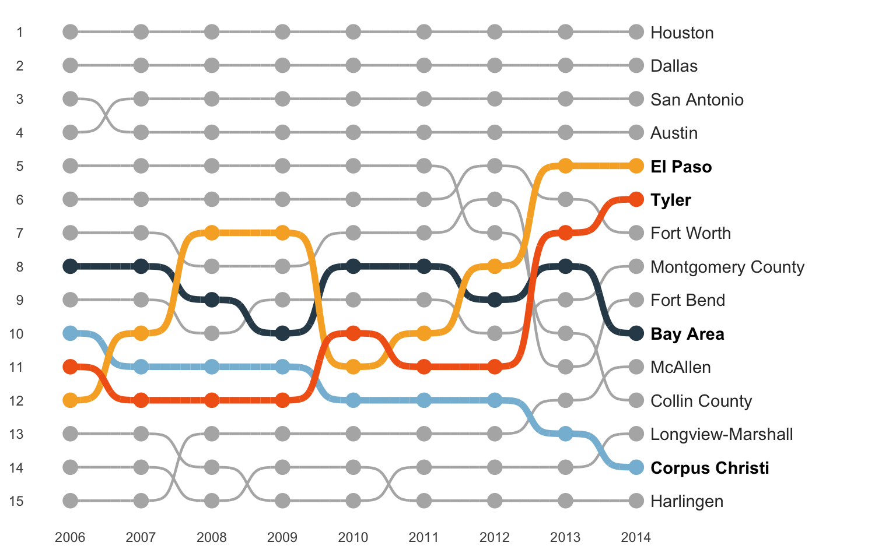
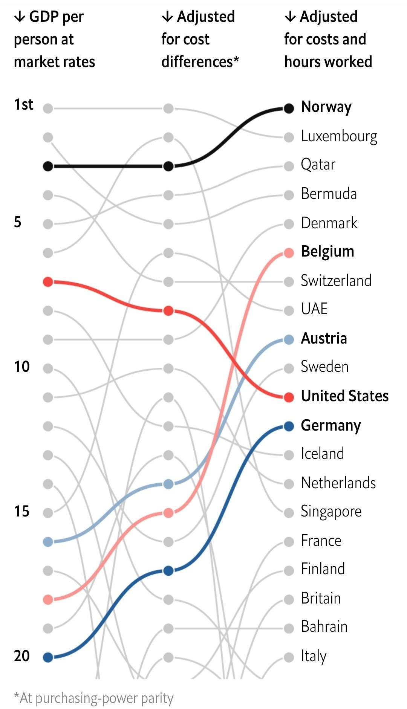
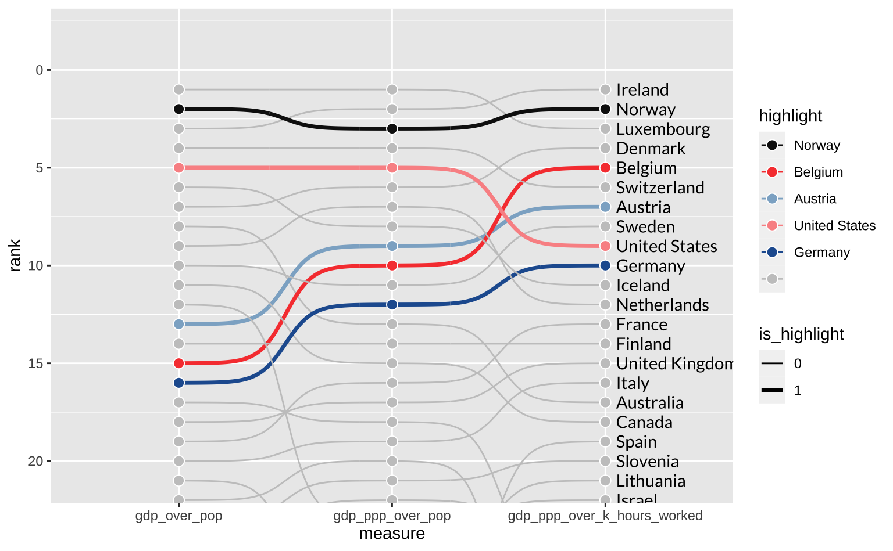
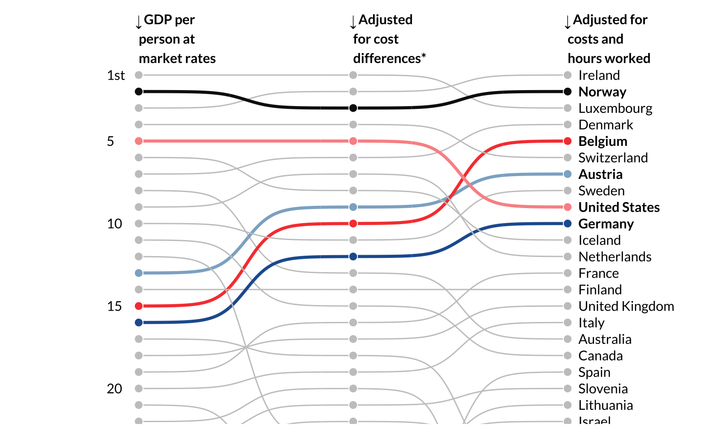

library(ggplot2)
library(ggbump)
library(dplyr)
library(tidyr)Setup
Existe um pacote auxiliar específico para criar “bump charts” chamado {ggbump}. O pacote está disponível tanto no CRAN como no Github do autor.
Neste tipo de gráfico, quer-se comparar o valor de uma variável em diferentes contextos. Podemos ter uma comparação entre os mesmos grupos ao longo do tempo ou os mesmos grupos ao longo de variáveis distintas. Em geral, estes gráficos são organizados em forma de rankings e têm como objetivo facilitar a comparação entre grupos.
Alguns exemplos de aplicação incluem:
- Número de medalhas de ouro nas olimpíadas de uma subamostra de países.
- Gênero mais escutado de música de um usuário ao longo dos anos.
- Países mais populosos do mundo ao longo de décadas.
- Ranking de imóveis em vários critérios.
- Ranking de times num campeonato a cada semana.
- Ranking de países mais ricos segundo diferentes critérios de riqueza
Pacotes
Exemplo simples
O primeiro exemplo é tomado emprestado da página de apresentação do pacote e ilustra o básico da função geom_bump. Os dados tem de estar em formato ‘tidy’ (longitudinal) onde a posição dos “pontos” é informada pelos argumentos x e y e os grupos identificados via group. Isto é, essencialmente, temos um grid de pontos, que ocupa 100% do espaço do gráfico, conectados via uma coluna “group”.
year <- rep(2019:2021, 4)
position <- c(4, 2, 2, 3, 1, 4, 2, 3, 1, 1, 4, 3)
player <- c("A", "A", "A",
"B", "B", "B",
"C", "C", "C",
"D", "D", "D")
df <- data.frame(x = year,
y = position,
group = player)| x | y | group |
|---|---|---|
| 2019 | 4 | A |
| 2020 | 2 | A |
| 2021 | 2 | A |
| 2019 | 3 | B |
| 2020 | 1 | B |
| 2021 | 4 | B |
| 2019 | 2 | C |
| 2020 | 3 | C |
| 2021 | 1 | C |
| 2019 | 1 | D |
| 2020 | 4 | D |
| 2021 | 3 | D |
Vale tirar um tempo para comparar, com calma, as entradas na tabela acima e o resultado no gráfico abaixo.
ggplot(df, aes(year, position, color = player)) +
geom_bump()
Venda de Imóveis
Podemos analisar as cidades com maior número de vendas ao longo dos anos usando a já conhecida txhousing. Quem acompanha meus tutoriais de ggplot2 já deve estar cansado de ver esta base sendo utilizada.
Queremos montar um gráfico que mostra o ranking de vendas de imóveis ao longo dos anos. Removo o ano de 2015, pois este ano não está completo na amostra. Como há mais de quarenta cidades na amostra eu crio uma subamostra que contém apenas as cidades com maior número de vendas em 2014. O código abaixo mostra o passo-a-passo da manipulação de dados.
#> Encontra as top-15 cidades com maior número de vendas em 2014
top_cities <- txhousing |>
#> Seleciona apenas o ano de 2014
filter(year == 2014) |>
#> Calcula o total de vendas em cada cidade
summarise(total = sum(listings, na.rm = TRUE), .by = "city") |>
#> Seleciona o top-15
slice_max(total, n = 15) |>
pull(city)
#> Calcula o total de vendas anuais na subamostra de cidades e faz o ranking anual
rank_housing <- txhousing |>
#> Seleciona apenas cidades dentro da subamostra
filter(city %in% top_cities, year > 2005, year < 2015) |>
#> Calcula o total de vendas a cada ano
summarise(
listing_year = sum(listings, na.rm = TRUE),
.by = c("city", "year")
) |>
#> Faz o ranking das cidades dentro de cada ano
mutate(rank = rank(-listing_year, "first"), .by = "year")No gráfico abaixo, cada cidade tem uma cor diferente, mas omito a legenda de cores. Note o uso de scale_y_reverse já que, tipicamente, queremos mostrar os menores valores na parte superior do gráfico.
ggplot(rank_housing, aes(year, rank, group = city, color = city)) +
geom_bump() +
scale_y_reverse() +
guides(color = "none")
Para melhorar a legibilidade do gráfico podemos colocar o nome das cidades ao lado das linhas usando geom_text.
ggplot() +
geom_bump(
data = rank_housing,
aes(year, rank, group = city, color = city)
) +
geom_text(
data = filter(rank_housing, year == max(year)),
aes(year, rank, label = city),
nudge_x = 0.1,
hjust = 0
) +
scale_y_reverse() +
scale_x_continuous(limits = c(NA, 2017)) +
guides(color = "none")
Mesmo com o nome das cidades, há muitas linhas para acompanhar no gráfico. Imagine, por exemplo, que queremos destacar apenas algumas das cidades selecionadas. Não parece fazer muito sentido destacar as cidades do top 4 (Houston, Dallas, San Antonio e Austin), já que elas praticamente não se alternam no ranking durante todo o período. Vamos, então, destacar as cidades de Bay Area, El Paso, Corpus Christi e Tyler.
sel_cities <- c("Bay Area", "El Paso", "Corpus Christi", "Tyler")
rank_housing <- rank_housing |>
mutate(
highlight = if_else(city %in% sel_cities, city, ""),
is_highlight = factor(if_else(city %in% sel_cities, 1L, 0L))
)O gráfico abaixo exige um código considervalmente mais longo, mas melhora o gráfico original em vários aspectos. Agora temos um maior destaque para as cidades de interesse. Os eixos estão melhor delimitados e as linhas de fundo redundantes foram removidas.
Code
ggplot() +
#> Linhas em cinza (sem destaque)
geom_bump(
data = filter(rank_housing, is_highlight == 0),
aes(year, rank, group = city, color = highlight),
linewidth = 0.8,
smooth = 8
) +
#> Linhas coloridas (com destaque)
geom_bump(
data = filter(rank_housing, is_highlight == 1),
aes(year, rank, group = city, color = highlight),
linewidth = 2,
smooth = 8
) +
#> Pontos
geom_point(
data = rank_housing,
aes(year, rank, color = highlight),
size = 4
) +
#> Nomes sem destaque
geom_text(
data = filter(rank_housing, year == max(year), !(city %in% sel_cities)),
aes(year, rank, label = city),
nudge_x = 0.2,
hjust = 0,
color = "gray20"
) +
#> Nome com destaque (em negrito)
geom_text(
data = filter(rank_housing, year == max(year), city %in% sel_cities),
aes(year, rank, label = city),
nudge_x = 0.2,
hjust = 0,
fontface = "bold"
) +
#> Adiciona os eixos para melhorar leitura do gráfico
scale_y_reverse(breaks = 1:15) +
scale_x_continuous(limits = c(NA, 2017), breaks = 2006:2014) +
#> Cores
scale_color_manual(
values = c("gray70", "#2f4858", "#86bbd8", "#f6ae2d", "#f26419")
) +
#> Elementos temáticos
labs(x = NULL, y = NULL) +
theme_minimal() +
theme(
panel.grid = element_blank(),
legend.position = "none"
)
Replicando
Como exercício final vamos replicar um gráfico da revista The Economist. O artigo original discute diferentes maneiras de mensurar e de comparar a riqueza entre países. Vamos nos focar apenas no gráfico abaixo. Este gráfico mostra um ranking dos países mais ricos do mundo segundo três métricas.
Na primeira “coluna”, temos o PIB per capita a preços correntes convencional. Esta é a medida mais crua de riqueza disponível. Na segunda coluna temos o PIB per capita em paridade de poder de compra (PPC), que ajusta a medida do PIB per capita pelo “custo de vida” de cada país. Por fim, a última coluna ajusta o PIB per capita em PPC pela número médio de horas trabalhado em cada país. Note como esta medida eleva consideravelmente a posição de países europeus como Bélgica, Alemanha, Áustria e Dinamarca, enquanto derruba alguns países como EUA e Singapura.

Os dados originais estão disponíveis on GitHub da The Economist mas eu não consegui encontrar o código que gera o gráfico acima. Como resultado, vou tentar adivinhar quais colunas, de fato, são utilizadas no gráfico. Além disso, como a fonte da The Economist é proprietária vou utilizar a Lato, da Google Fonts.
library(showtext)
font_add_google("Lato", "Lato")
showtext_auto()Boa parte da construção da visualização acima está na manipulação dos dados. Assim, vou fazer um passo-a-passo.
Dados
Primeiro defino alguns objetos úteis como o nome dos países que serão destacados e o nome das colunas que contém as variáveis de PIB. Além disso, crio uma tabela menor que contém apenas as colunas necessárias para a visualização.
countries_sel <- c("Norway", "Belgium", "Austria", "United States", "Germany")
measures <- c("gdp_over_pop", "gdp_ppp_over_pop", "gdp_ppp_over_k_hours_worked")
sub <- dat |>
select(country, year, all_of(measures)) |>
na.omit()A transformação essencial é converter os dados em formato tidy e ranquear as observações dentro de cada métrica de PIB.
ranking <- sub |>
filter(year == max(year)) |>
pivot_longer(cols = -c(country, year), names_to = "measure") |>
mutate(rank = rank(-value), .by = "measure")Agora, mais por conveniência, eu crio algumas variáveis auxiliares que serão úteis para mapear os diferentes elementos estéticos.
ranking <- ranking |>
mutate(
highlight = if_else(country %in% countries_sel, country, ""),
highlight = factor(highlight, levels = c(countries_sel, "")),
is_highlight = factor(if_else(country %in% countries_sel, 1L, 0L)),
rank_labels = if_else(rank %in% c(1, 5, 10, 15, 20), rank, NA),
rank_labels = stringr::str_replace(rank_labels, "^1$", "1st"),
measure = factor(measure, levels = measures)
)Por fim, eu defino as cores das linhas e crio uma tabela auxiliar que contém apenas o texto que vai em cima do gráfico.
cores <- c("#101010", "#f7443e", "#8db0cc", "#fa9494", "#225d9f", "#c7c7c7")
df_gdp <- tibble(
measure = measures,
measure_label = c(
"GDP per person at market rates",
"Adjusted for cost differences*",
"Adjusted for costs and hours worked"
),
position = -1.2
)
df_gdp <- df_gdp |>
mutate(
measure = factor(measure, levels = measures),
measure_label = stringr::str_wrap(measure_label, width = 12),
measure_label = paste0(" ", measure_label)
)A versão simplificada do gráfico está resumida no código abaixo. Vale notar o uso da coord_cartesian para “cortar o gráfico” sem perder informação. Não é muito usual utilizar linewidth como um elemento estético dentro de aes mas pode-se ver como isto é bastante simples e como isto economiza algumas linhas de código, quando comparado com o gráfico anterior.
ggplot(ranking, aes(measure, rank, group = country)) +
geom_bump(aes(color = highlight, linewidth = is_highlight)) +
geom_point(shape = 21, color = "white", aes(fill = highlight), size = 3) +
geom_text(
data = filter(ranking, measure == measures[[3]]),
aes(x = measure, y = rank, label = country),
nudge_x = 0.05,
hjust = 0,
family = "Lato"
) +
coord_cartesian(ylim = c(21, -2)) +
scale_color_manual(values = cores) +
scale_fill_manual(values = cores) +
scale_linewidth_manual(values = c(0.5, 1.2))
Note que o gráfico acima inclui alguns países que não aparecem na visualização original como Irlanda e Luxemburgo. Existe um certo debate sobre a inflação do PIB per capita da Irlanda (devido ao grande número de empresas estrangeiras que mantêm suas sedes no país, em função dos baixos impostos da Irlanda). Um argumento similar pode ser feito sobre Luxemburgo. Ainda assim, decidi manter os dois países no gráfico final.
O código final, como de costume, é bastante extenso. De maneira geral, o resultado é bastante satisfatório.
Code
ggplot(ranking, aes(measure, rank, group = country)) +
geom_bump(aes(color = highlight, linewidth = is_highlight)) +
geom_point(shape = 21, color = "white", aes(fill = highlight), size = 3) +
#> Nome dos páises sem destaque
geom_text(
data = filter(ranking, measure == measures[[3]], is_highlight != 1L),
aes(x = measure, y = rank, label = country),
nudge_x = 0.05,
hjust = 0,
family = "Lato"
) +
#> Nome dos páises com destaque (em negrito)
geom_text(
data = filter(ranking, measure == measures[[3]], is_highlight == 1L),
aes(x = measure, y = rank, label = country),
nudge_x = 0.05,
hjust = 0,
family = "Lato",
fontface = "bold"
) +
#> "Eixo" na esquerda (1st, 5, 10, 15, 20)
geom_text(
data = filter(ranking, measure == measures[[1]]),
aes(x = measure, y = rank, label = rank_labels),
nudge_x = -0.15,
hjust = 0,
family = "Lato"
) +
#> Texto descritivo acima do gráfico
geom_text(
data = df_gdp,
aes(x = measure, y = position, label = measure_label),
inherit.aes = FALSE,
hjust = 0,
family = "Lato",
fontface = "bold"
) +
#> Posiciona as flechas apontando para baixo
annotate("text", x = 1, y = -2.2, label = expression("\u2193")) +
annotate("text", x = 2, y = -2.2, label = expression("\u2193")) +
annotate("text", x = 3, y = -2.2, label = expression("\u2193")) +
#> Corta o gráfico
coord_cartesian(ylim = c(21, -2)) +
#> Cores
scale_color_manual(values = cores) +
scale_fill_manual(values = cores) +
#> Espessura das linhas
scale_linewidth_manual(values = c(0.5, 1.2)) +
#> Elementos temáticos
labs(x = NULL, y = NULL) +
theme_minimal() +
theme(
panel.background = element_rect(fill = "#ffffff", color = NA),
plot.background = element_rect(fill = "#ffffff", color = NA),
panel.grid = element_blank(),
legend.position = "none",
axis.text = element_blank()
)
O objetivo destes posts é de sempre fazer o máximo possível usando ggplot2 mas, na prática, as caixas de texto acima do gráfico podem ser feitas num software externo. Não é muito fácil usar caracteres especiais (neste caso, flechas) e a própria fonte (Lato) não inclui flechas em unicode. Pode-se melhorar a ordem da sobreposição das linhas usando geom_bump duas vezes como fizemos no gráfico dos imóveis, mas isto exigiria várias linhas adicionais de código.